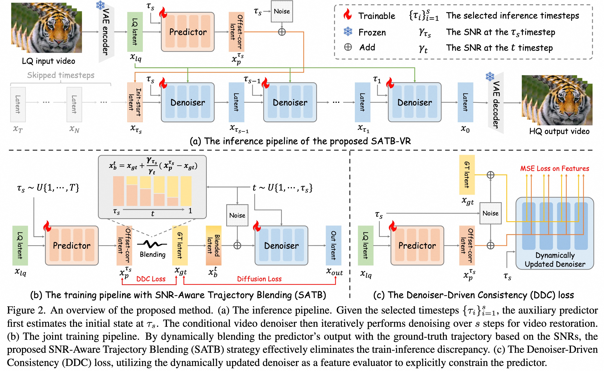
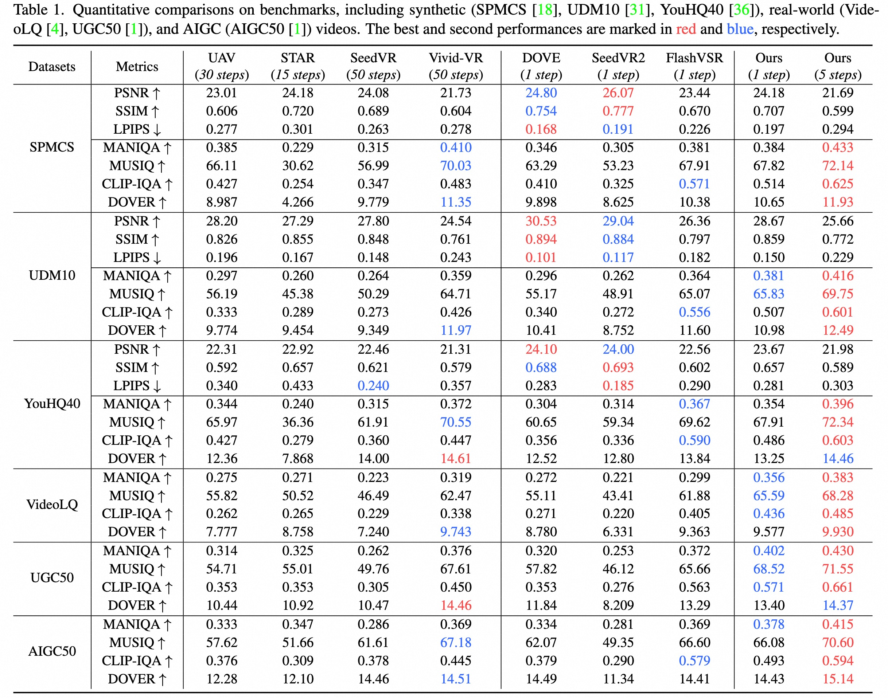
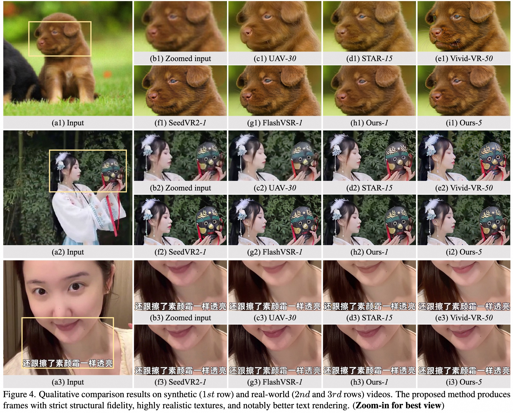

While diffusion models excel in video restoration, their reliance on extensive iterative steps limits efficiency. Conversely, aggressive single-step distillation often compromises fine texture recovery. To achieve an optimal balance, we present SATB-VR, a few-step paradigm that jump-starts the denoising process via an auxiliary predictor, explicitly bypassing early low signal-to-noise ratio (SNR) steps. However, naive joint training of the predictor and the denoiser inherently introduces a severe train-inference discrepancy. To resolve this, we propose the SNR-Aware Trajectory Blending (SATB) strategy. During the forward process, SATB constructs the noisy input by dynamically blending the predictor's output with the ground-truth trajectory based on the SNRs. This forces the denoiser to robustly compensate for initial prediction errors while smoothly converging to the clean data manifold. Furthermore, we introduce a Denoiser-Driven Consistency (DDC) loss, leveraging the concurrently updated denoiser as a dynamic evaluator to explicitly align internal features and boost predictor accuracy. Extensive experiments demonstrate that, under flexible few-step inference regimes (eg., ≤ 5 steps), SATB-VR performs favorably against existing approaches on synthetic, real-world, and AIGC benchmarks.

For synthetic testsets, we employ full-reference metrics (PSNR, SSIM, LPIPS) and no-reference metrics (MANIQA, CLIP-IQA, MUSIQ, DOVER). For real-world and AIGC testset, we only adopt no-reference metrics due to the absence of ground truth. Experimental results show that our SATB-VR achieves almost the best results on no-reference metrics.


@article{bai2026satb,
title={SATB-VR: Training Few-Step Video Restoration Diffusion Model using SNR-Aware Trajectory Blending},
author={Bai, Haoran and Chen, Xiaoxu and Liu, Xiaoyu and Yue, Zongsheng and Deng, Sibin and Zuo, Wangmeng and Chen, Ying},
journal={arXiv preprint arXiv:2606.28677},
year={2026}
}